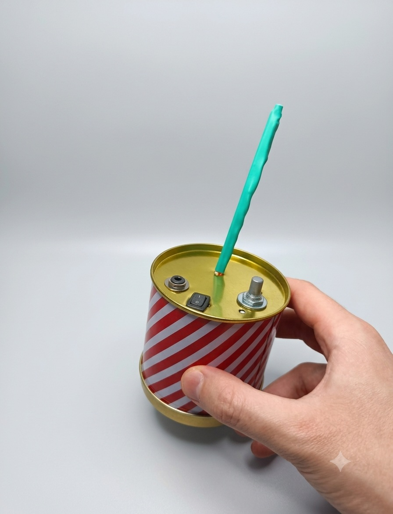
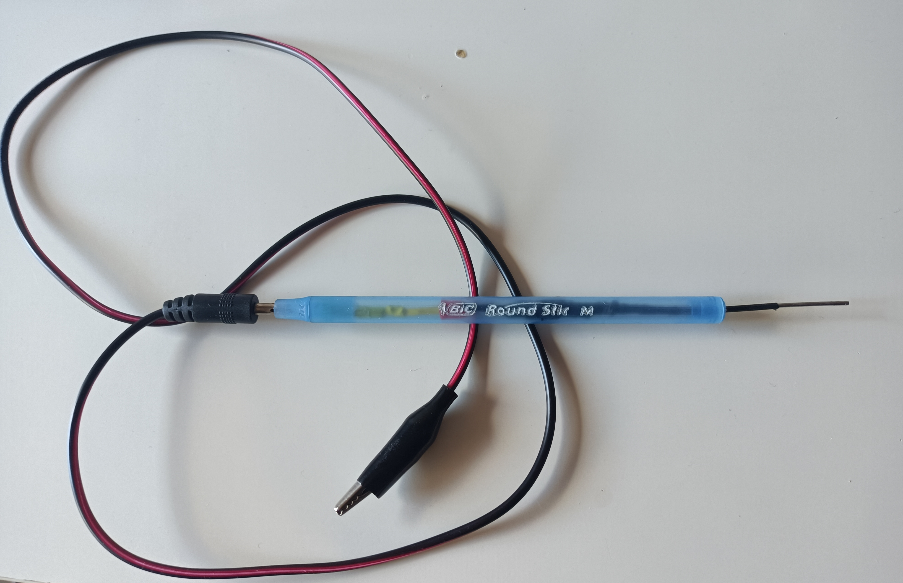
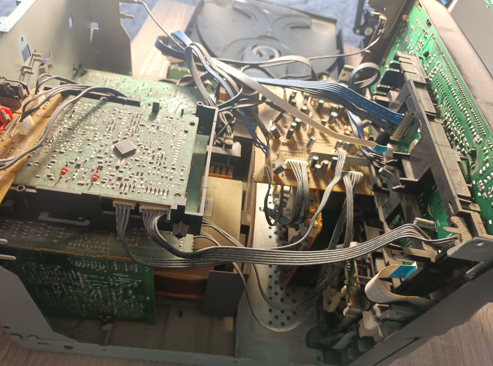
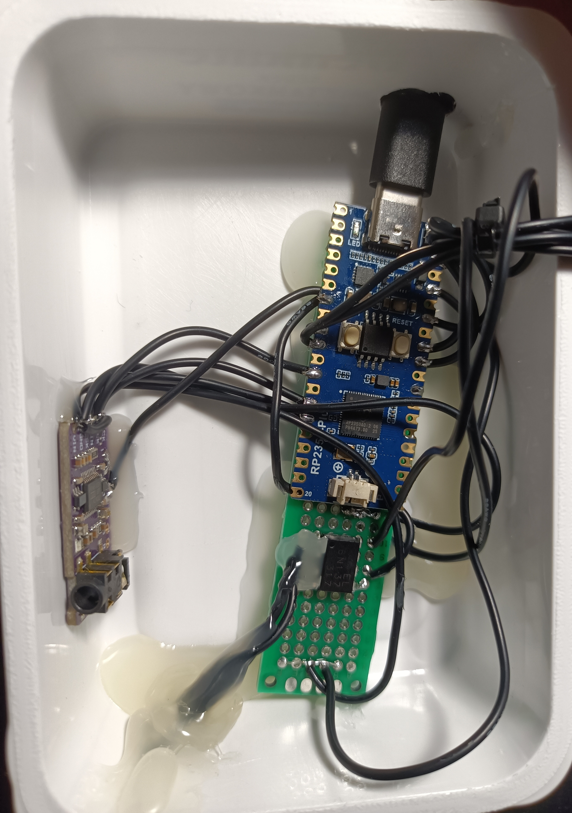
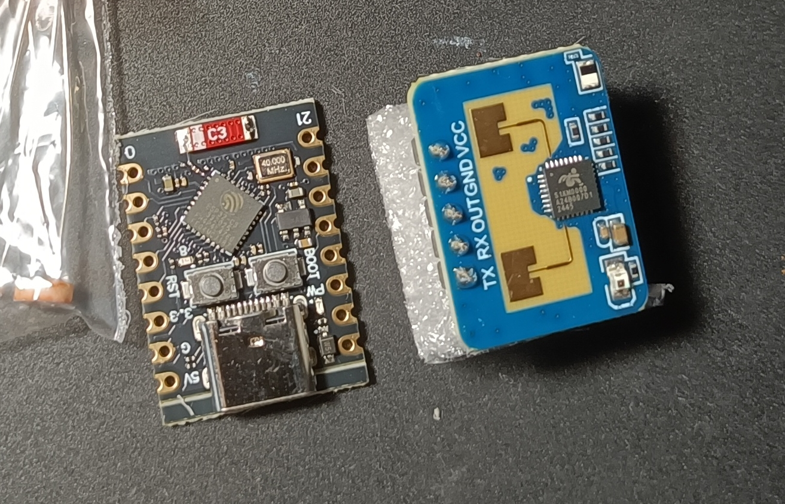
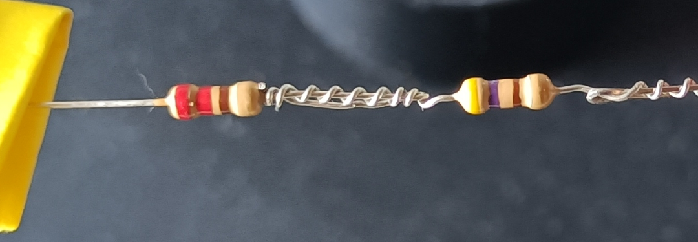
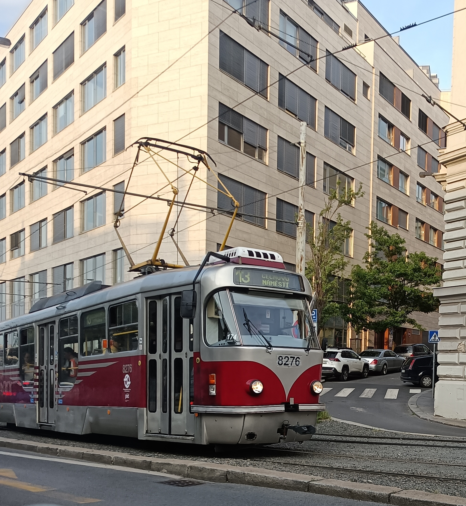

Odbiornik pętli indukcyjnej

Data: 2026
Analogowy odbiornik fal elektromagnetycznych, wzmacniający je, filtrujący i podający na wyjście jack 3.5mm
indukcja fal EMI, filtrowanie i wzmacnianie sygnału, narzędzie diagnostyczne
ELECTRONICS / C++ / IT
Tworzę i rozwijam projekty z zakresu elektroniki, programowania oraz technologii.
↓ SCROLL
Wybrane projekty elektroniczne, programistyczne oraz techniczne.

Data: 2026
Analogowy odbiornik fal elektromagnetycznych, wzmacniający je, filtrujący i podający na wyjście jack 3.5mm
indukcja fal EMI, filtrowanie i wzmacnianie sygnału, narzędzie diagnostyczne
Data: ???
Mikroprocesorowy tester rezystancji szeregowej kondensatorów elektrolitycznych (ESR). Projekt w trakcie budowy
C++, SMD, projektowanie PCB, STM32

Data: 2025
Prosty tester obecności napięcia 12V z diodą LED
lutowanie, elementy z odzysku

Data: 2024 - obecnie
Zbiór najciekawszych serwisów urządzeń elektronicznych
diagnostyka, lutowanie, wymiana modułów, naprawy mechaniczne

Data: 2026
Mikroprocesorowy syntezator dzwięków z komunikacją MIDI, I2S
Raspberry, MIDI, I2S, C++

Data: ???
Mikrkontroler ESP32 działający jako zdalny czujnik środowiskowy, mikrofalowy czujnik ruchu i bluetooth proxy dla systemu Home Assistant
IoT, ESP32, mmWave, I2C

Data: ???
Analogowy wzmacniacz audio hi-fi, zasilany napięciem symetrycznym
I2S, filtrowanie sygnałów, projektowanie PCB, napięcie symetryczne
C++, powershell, I2S, I2C, MQTT, CANBUS, elektronika analogowa i cyfrowa, mikrokontrolery, lutowanie THT i SMD, tworzenie schematów elektronicznych, projektowanie płytek PCB, multimetr, zasilacz labolatoryjny, stacja lutownicza i lutownica transformatorowa, filtrowanie prądu stałego, zmiennego i sygnałów cyfrowych, obróbka tworzyw sztucznych, diagnostyka i serwis układów elektronicznych

Jeremiasz Chmielnicki
jeremi.chmielnicki@gmail.com